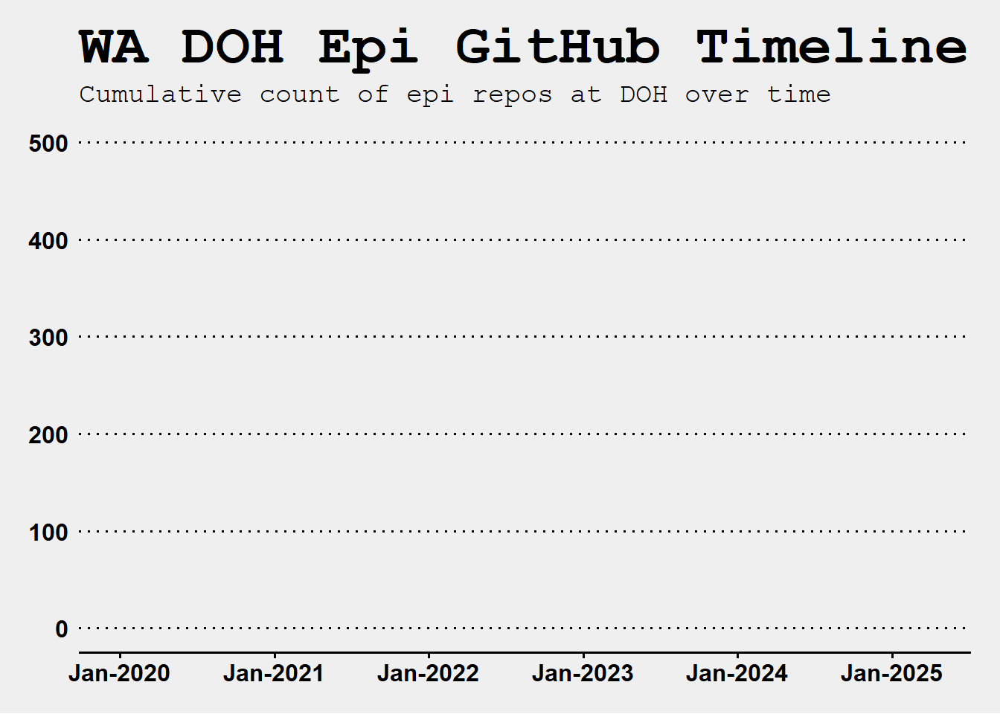

Overview
- NW-PaGe GitHub org details
- Washington DOH GitHub use statistics over time
- Security
- GitHub Pages + Quarto
- Examples
NW-PaGe GitHub Org (link)
Goals
- Transparency
- Reproducibility
- Education
- Collaboration
My Goals
- Write the SOPs
- Prevent data leaks
- Explore publishing tools
- Get the ball rolling
Policies Overview
Here are the docs
Here’s a checklist for getting started
- For those looking to make a new repo
- Security items to review
- Create security guardrails
- Secret scanning
- Licensing
- Branch protections
- Documentations
- cannot push credentials or sensitive data (here’s a list)
- .gitignore
- hooks
- secret scanning
- convert private repo to public
- Code of conduct
- Contributing form
- Templates (Issues, PRs, Requests, Discussions)
- GitHub apps for code sign off
Here’s a collab guide
- Git/GitHub basics
- How to contribute to a repo
- Git/GitHub workflows
Use an MIT license for everything. Here’s more info
Security - Pre-Commit Hooks
Create Secret Key
This file contains regular expressions of credentials that are prohibited from being in a remote GitHub repo.
Example Script
The script below has hardcoded prohibited patterns.

Pattern Rejection
AWS Git Secrets rejects the commit if it detects the patterns found in the secret key file.

Output
The first three lines show the regex patterns that got flagged, along with a warning message. The last chunk gives you instructions on how to handle false positives.
output
test.R:3:user <- secret_username
test.R:4:password <- secret_password
test.R:6:connection <- ODBC_CONNECTION1
[ERROR] Matched one or more prohibited patterns
Possible mitigations:
- Mark false positives as allowed using: git config --add secrets.allowed ...
- Mark false positives as allowed by adding regular expressions to .gitallowed at repository's root directory
- List your configured patterns: git config --get-all secrets.patterns
- List your configured allowed patterns: git config --get-all secrets.allowed
- List your configured allowed patterns in .gitallowed at repository's root directory
- Use --no-verify if this is a one-time false positiveGitHub Pages and Quarto
We can use GitHub Pages to host htmls, and Quarto to develop websites, books, articles, presentations, and reports.
Here’s how parameterized reports work
Start with our .qmd file.
When rendering, we can set the parameter we want.
Quarto will generate a separate output file for each parameter set, with the data filtered according to the specified parameter(s).


but who cares?
I do!
We can use Quarto and GitHub to showcase our work and run code automatically. A GitHub Action can run code conditionally or on a schedule, and GitHub Pages can host the html output of our reports.
examples
COVID Seq ELR
Author: Philip Crain
Summarize and share COVID-19 Sequencing Metadata ELR data flow at the Washington State Department of Health.
|
This repo provides a high-level description of the Sars-CoV-2 sequencing metadata ELR ingestion process at DOH, from lab submissions to ingestion into the Washington Disease Reporting System where it is linked with epi data. See the GitHub Page for more information |

|
Case Study Vibrio
Author: Marcela Torres
Currently only internal users can see this repo and GitHub Page.
|
This case study is intended for epidemiologists, bioinformaticians, and other public health professionals who are interested in using sequencing data as a way to better understand transmission and links between cases. We provide a couple of options to execute some of the tasks based on different levels of expertise. See GitHub Page for more details. |
MPOX Surveillance for WA DOH
Author: Pauline Trinh
Currently only internal users can see this repo and GitHub Page.
|
This repo contains scripts and information on how MPOX sequencing data is retrieved from NCBI and analyzed in Nextclade to look for mutations associated with tecovirimat resistance (asparagine 267 deletion N267del and alanine-184-to-threonine substitution A184T) and generate a report of those findings. Currently the report and scripts in this repository are automated to run biweekly on Mondays at 7am Pacific Time using GitHub Actions. For manual running of the scripts in this repository please see instructions below. |

|
COVID-19 Lineage Classifications
Authors: Lauren Frisbie, Alena Schroeder, Frank Aragona
Create a public lineage classifications dataset. The dataset is maintained by the WA DOH Molecular Epidemiology Program in order to group the lineages for the Sequencing & Variants Report.
|
This repo contains scripts that will pull SARS-COV-2 lineages of interest from CDC’s repo, transform the data for Washington State DOH reporting purposes, and then output the resulting lineage classifications dataset. The dataset will be produced biweekly and can be found in the data folder. See instructions below on how to pull the dataset in R or Python. For more information on how the scripts work, plots, and guides on how to pull data from the repo, please open the github page. |

|
Seq Integration Pipeline
Author: DIQA, MEP, DSSU, evvveryone
Documentation on the first version of the data integration pipeline for sequencing metadata at WA DOH - used during the height of the COVID-19 pandemic.
|
For a more detailed look at the pipeline, please read the manuscript in our github page. The document comes in multiple formats (HTML, PDF and MS Word) and all the main code is documented under the Notebooks tab in the site. There are links to dev containers if you wish to explore the code, although there are no test data sets available at this time. In the future we will push our updated pipelines and test data so that you can explore the code. |